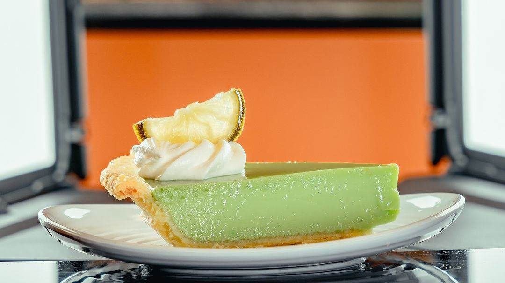

TVA Key Lime Recipe
As seen in Loki Season 2, the TVA Key Lime Pie recipe!
I believe many of us are wondering how does the key lime pie from Loki Season 2 taste like. Well now you can!

Ingredients:
- 4 ounces full-fat brick cream cheese, softened to room temperature
- 4 large egg yolks
- One 14-ounce can of sweetened condensed milk
- 1/2 cup key lime juice
- Mini graham cracker crust (store-bought!)
- Food coloring (green, red, and yellow) (Optional)
Directions:
- Preheat the oven to 350°F.
- In a large bowl with either a hand-held mixer or stand mixer, beat the cream cheese until soft, 1-2 minutes.
- On medium-high speed, slowly mix in the egg yolks.
- Continuing to mix on medium-high speed, add in the sweetened condensed milk, followed by the lime juice.
- If using food coloring, transfer the batter into smaller bowls:
For green: Add in 1-2 drops of green food coloring, until desired color is achieved.
For orange: Add in 2 drops of red food coloring, followed by 12 drops of yellow food coloring until the desired color is achieved.
- Evenly divide the batter between the graham cracker crusts.
- Place the crusts on an oven-safe pan and transfer to the oven, baking for 14-15 minutes until the middle of the batters only slightly jiggle in the middle.
- Remove from the oven and let the pies cool at room temperature before transferring to the refrigerator for a minimum of two hours.
- Remove pies from the refrigerator and serve with whipped cream, or decorate accordingly. Baked pies can be stored in the refrigerator for up to one week!